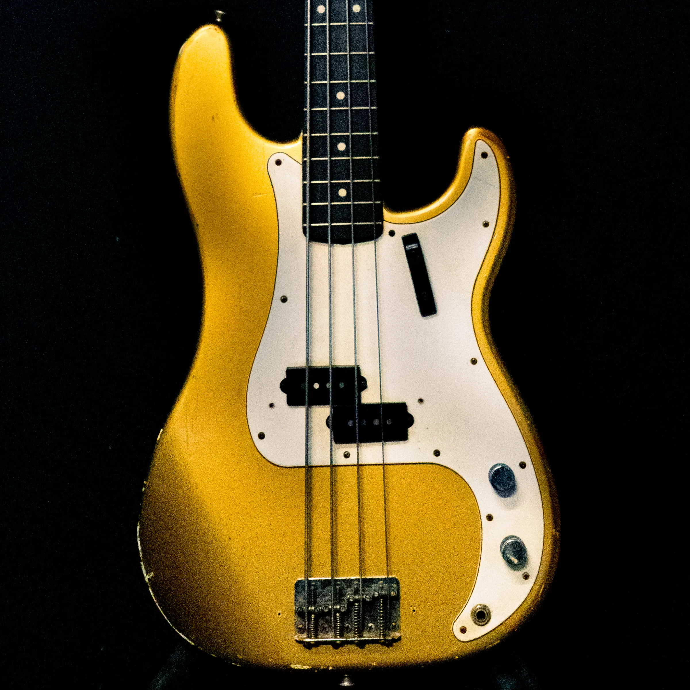
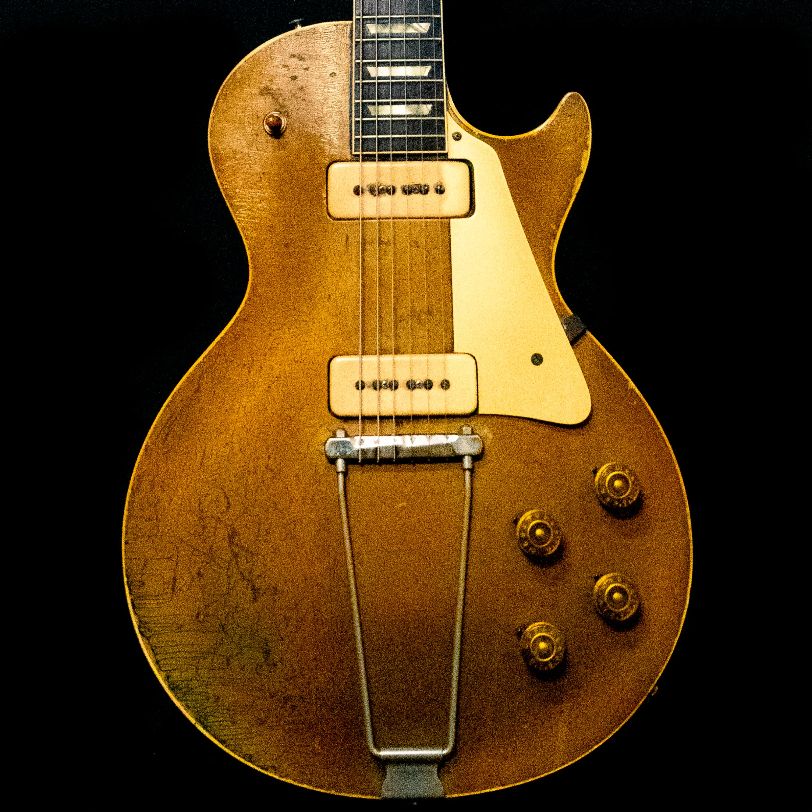
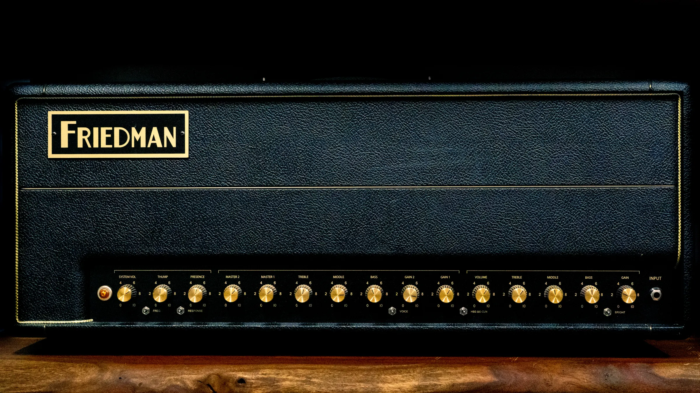

A curated collection of professional-grade tools we use to capture and shape your sound. Walk in with songs — the backline is already here.



Microphones
Royer R-121
Modern ribbon reference for guitar cabs, brass, and room tone.
Coles 4038
Classic BBC-designed ribbon prized for smooth, natural high end.
AEA R44
Big-bodied vintage-style ribbon for warmth on vocals and horns.
AEA R88
Stereo ribbon for Blumlein and mid-side room/orchestral capture.
Beyerdynamic M160
Hypercardioid double-ribbon, a go-to for guitar amps and strings.
Neumann U47 FET
Studio staple for lead vocals, kick, and bass with signature low end. Solid-state FET, not a tube U47.
Lewitt LCT 1040
Modern large-diaphragm tube condenser for vocals and acoustic sources.
Sennheiser MD 421
Versatile dynamic for toms, guitar cabs, and broadcast-style vocals.
Shure SM57
The industry-standard workhorse for snare, guitar cabs, and more.
AKG D12VR
Purpose-built low-end capture for kick drum and bass cabs.
Preamps & Outboard
API 512v
The classic API preamp tone — fast, punchy, and musical.
API 3124V
4-channel API preamp for tracking full bands with consistent character.
BAE 1073
Neve-style British preamp/EQ, a classic on vocals, drums, and bass.
Loaded API 8-Slot Rack
API 500-series lunchbox loaded for flexible channel-by-channel color.
Purple Audio MC77
1176-style FET compressor known for its aggressive, musical squeeze.
Black Lion Audio "Bluey"
Modded 1176-style compressor for fast, colorful vocal and bus compression.
BBB Fairchild 670
Legendary tube compressor for smooth, glued mix-bus and vocal compression.
Audioscape LA2A
Opto compressor for smooth, transparent vocal and bus leveling.
UAD 4-710d
4-channel tube/solid-state hybrid preamp for tracking flexibility.
Dizengoff Audio D4
Boutique 4-channel preamp for additional tonal color.
Ampex 600
Vintage tape machine for analog saturation and character.
Monitoring & Interfaces
Barefoot MicroMain27
High-resolution mix reference monitors for accurate, translatable mixes.
2x Universal Audio Apollo x16
32 channels of premium conversion and DSP-powered analog modeling.
Universal Audio Apollo Twin
Portable UA conversion for remote sessions and overflow tracking.
DAWs
Universal Audio Luna
Analog-modeled workflow tightly integrated with the Apollo signal chain.
Avid Pro Tools
Industry-standard editing and mixing environment.
Reaper
Flexible, fast workstation for tracking and production.
Guitars & Backline
No need to haul your rig — a full in-house backline is available for sessions.
Murphy Lab Custom Shop Gibson Les Paul
Aged custom shop Les Paul for classic rock and blues tones.
Murphy Lab Custom Shop Gibson 335
Semi-hollow custom shop tone for blues, jazz, and rock.
2x Master Built Zerberus Chronos
Boutique master-built electrics for modern and metal tones.
Gibson Les Paul
Classic mahogany-and-maple Les Paul tone.
Fender Stratocaster
Versatile single-coil workhorse.
Custom Electric
One-off custom build for additional tonal options.
Danocaster P Bass
Boutique-built P Bass with vintage-correct tone and feel.
Taylor Acoustic
Bright, articulate acoustic for tracking and songwriting.
Rockbridge Acoustic
Handbuilt American acoustic with rich, balanced tone.
Custom & Fender Acoustics
Additional acoustic options for layering and songwriting sessions.
Amps & Cabinets
1968 Marshall Plexi 50W
Classic British crunch and lead tone. Formerly owned by Tom Bukovac.
Friedman BE-100
Modern high-gain versatility for rock and metal.
1963 Fender Bassman
Warm, classic American tube tone.
Fender Deluxe Reverb & Vibro-King
Clean headroom and lush spring reverb for a range of styles.
Custom Tube Guitar Amp
Hand-built Dumble-style copy for singing, harmonically rich lead tone.
Fender Acoustic Guitar Amp
Dedicated acoustic-electric amplification.
Pignose Guitar Amp
Classic battery-powered mini amp for lo-fi, grimy tones.
Bugera Guitar Amp
Extra tube amp option for additional tonal variety.
Vintage Marshall 4x12
Classic cabinet for reamping and tracking.
Vintage Fender Bassman 2x12
Warm, open low-mid cabinet for guitar and bass reamping.
Audio Eyra 1x15
Boutique 1x15 cab for bass and thick, rounded guitar tone.
Tonkraf 2x12
Additional 2x12 cab option for guitar reamping.
See the full re-amping & tone service page →
Keys & Drums
Steinway Upright Piano
Acoustic piano for tracking real, resonant keys.
Nord Electric Piano & Korg Synth
Electric piano and synth for production and layering.
Custom Q 3-Piece Drum Set
Full custom kit with Pearl, DW, Pork Pie, and A&F snares available.
Full Cymbal & Hardware Collection
Extensive cymbals, hardware, and percussion on hand.
Live Sound
In-house PA for live tracking, showcases, and events.
4x JBL Mains & 2x JBL Subs
Full JBL main/sub rig plus a floor monitor for full live sound coverage.
Wireless Mics, IEMs & Live Sound Boards
Wireless handhelds, in-ear monitor systems, and live sound boards for full live performance.
Plus a deep plugin library covering EQ, compression, saturation, and amp modeling, an extensive guitar pedal collection, and full session support (mic stands, cabling, patchbays, and more). Contact us if you have specific equipment questions.
Come use it
The backline is included with recording sessions. Walk in with songs.